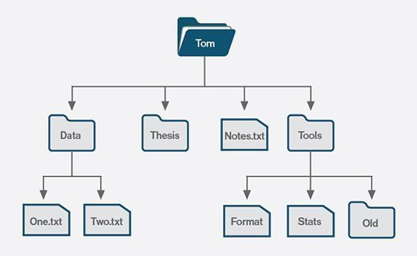

Real Life Applications of Trees
Trees are a type of data structure that are used in many real-life applications. Here are some examples:
- File Systems: File systems such as NTFS and HFS+ use trees to represent the hierarchy of files and directories. Each directory is represented as a node in the tree, with its child directories and files as its sub-nodes.
- Internet Routing: The Internet is a vast network of interconnected routers, which use tree-based routing algorithms to forward data packets. In this case, each router maintains a tree data structure representing the network topology, with each node in the tree representing a different router.
- Organization Charts: Organization charts are often represented as trees, with each node representing a different position or role within the organization. This allows for an easy visualization of the organizational hierarchy.
- Decision Trees: Decision trees are used in machine learning and data mining to model decisions and their possible consequences. Each node in the tree represents a decision point, with the branches representing the possible outcomes of that decision.
- XML Parsing: XML (eXtensible Markup Language) is a popular data format for storing and exchanging information. XML documents are often represented as trees, with each node representing an element in the document.
Overall, trees are a versatile data structure that can be used to represent hierarchical relationships between objects or concepts. Their ability to efficiently store and retrieve data makes them an important tool in many real-life applications.

